Operación Neptuno - Desembarco de Normandía
junio de 1944
Planificación
La planificación del Día D fue un esfuerzo colosal que involucró a líderes militares de Estados Unidos, el Reino Unido, Canadá y otras naciones aliadas. Los comandantes aliados, encabezados por el general Dwight D. Eisenhower, diseñaron una estrategia meticulosa para llevar a cabo el desembarco en las playas de Normandía, en la costa norte de Francia.
División de Tropas
Se establecieron cinco playas para el desembarco: Utah, Omaha, Gold, Juno y Sword. Las tropas estadounidenses desembarcaron en Utah y Omaha, mientras que las británicas y canadienses lo hicieron en Gold, Juno y Sword.
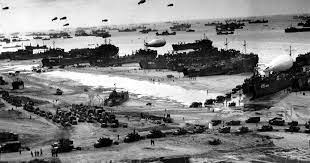
Ataque Aéreo y Paracaidistas
En las horas previas al desembarco, paracaidistas aliados, en su mayoría estadounidenses y británicos, fueron lanzados detrás de las líneas enemigas para asegurar puentes y carreteras, así como para desorganizar las defensas alemanas.
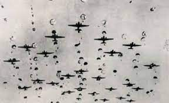
Asalto Anfibio
El 6 de junio de 1944, en la madrugada, una inmensa flota de barcos de guerra, transportes y lanchas de desembarco se acercó a las costas de Normandía. La aviación aliada lanzó intensos bombardeos sobre las defensas costeras alemanas para debilitarlas antes del desembarco.
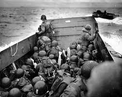
Desembarco en las Playas
Las fuerzas aliadas desembarcaron en las playas asignadas enfrentándose a una feroz resistencia alemana. La playa más problemática fue Omaha, donde las tropas estadounidenses enfrentaron fuertes defensas alemanas y sufrieron numerosas bajas. A pesar de las dificultades, los aliados lograron establecer una cabeza de playa.
Tras asegurar las playas, las fuerzas aliadas avanzaron tierra adentro. Se encontraron con obstáculos como campos de minas y fortificaciones alemanas, pero la tenacidad y el coraje de los soldados aliados les permitieron avanzar gradualmente.
El éxito del Día D llevó a la liberación de Francia y marcó el comienzo del fin para la ocupación nazi en Europa. A medida que las fuerzas aliadas avanzaban, se produjo una serie de batallas que finalmente llevaron a la derrota de Alemania en mayo de 1945.
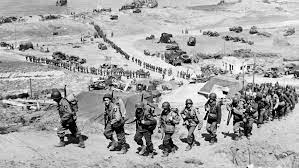
Operación Mincemeat
abril de 1943
En abril de 1943, el ejército británico estaba en horas bajas. Se acercaban rápidamente a un callejón sin salida y necesitaban desesperadamente obtener un punto de apoyo más fuerte en Europa. El punto de invasión perfecto era Sicilia, pero había un gran problema; las potencias del Eje lo sabían y estaban defendiendo ferozmente las aguas alrededor del sur de Italia. Los Aliados no podían acercarse a una invasión sin ser saboteados por los submarinos alemanes U. Algo tenía que hacerse para distraer al Eje y permitir que los Aliados se deslizaran en Europa con poco o ningún impedimento.
Los Aliados recurrieron a un memorando que circulaba en la inteligencia británica que sugería varias ideas para atraer a los submarinos alemanes U hacia campos de minas. Se cree que fue escrito por Ian Flemming, Montagu y Charles Cholmondeley se decidieron por el número 28 de la lista, 'Una sugerencia (no muy agradable)'. La idea sugería que un cuerpo que llevaba documentos importantes en un maletín fuera 'descubierto' por la potencia del Eje. El contenido del maletín detallaría que el ataque a Sicilia era un engaño, y que los Aliados planeaban desembarcar en Grecia en su lugar.
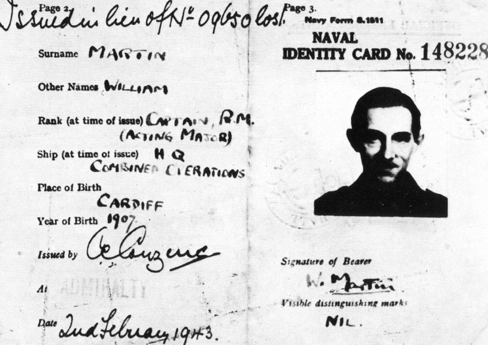
No solo los documentos debían convencer al comando alemán de que eran reales, el soldado muerto que los llevaba también debía ser convincente para vender el engaño. No era suficiente que los documentos falsificados encontrados parecieran legítimos: la inteligencia británica también tenía que forjar a un ser humano.
Se creó una identidad completamente nueva para Glyndwr, que se convirtió en William Martin, un oficial de la Marina Real. Entre sus documentos oficiales se incluían fotos de su amada, cartas personales, identificaciones y efectos personales que creaban la imagen de un ser humano completo. Detalles desde el desgaste en su uniforme hasta una pestaña oculta en los propios documentos se agregaron para asegurar un nivel convincente de realidad, e incluso se consideraron detalles como el estilo de ropa interior que William Martin usaría. Ningún detalle demasiado pequeño podría pasarse por alto si la Operación Mincemeat iba a tener éxito. Así que cuando el oficial de la Marina Real William Martin fue descubierto por un pescador en España neutral aparentemente muerto en un accidente aéreo, la inteligencia británica contuvo el aliento esperando ver si Alemania había caído en la trampa.
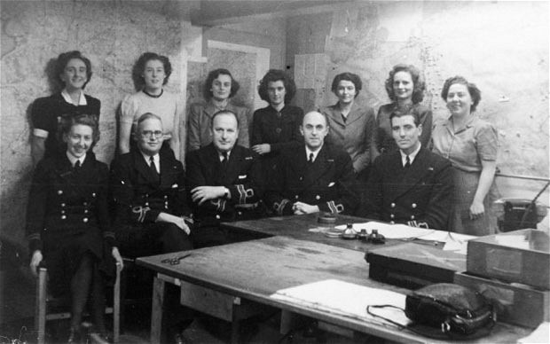
Cuando el cuerpo de Glyndwr fue devuelto a Gran Bretaña junto con los documentos, las investigaciones forenses sugirieron que los alemanes los habían leído, y mensajes descifrados poco después mostraron que el comando alemán se estaba preparando para una invasión de Grecia y Cerdeña, y la mirada del Eje se apartó de Sicilia.
Operación Bodyguard / Operación Fortitude
Operación Bodyguard
Operación Bodyguard fue empleada por las fuerzas aliadas durante toda la Segunda Guerra Mundial como táctica de distracción para alejar a las fuerzas del Eje de puntos clave de invasión antes del desembarco en Normandía. Al crear la apariencia de que las tropas aliadas se estaban acumulando más cerca de otras áreas, la esperanza era que Alemania retirara tropas de Normandía, permitiendo a las fuerzas aliadas una mayor posibilidad de un desembarco exitoso cuando llegara el momento.
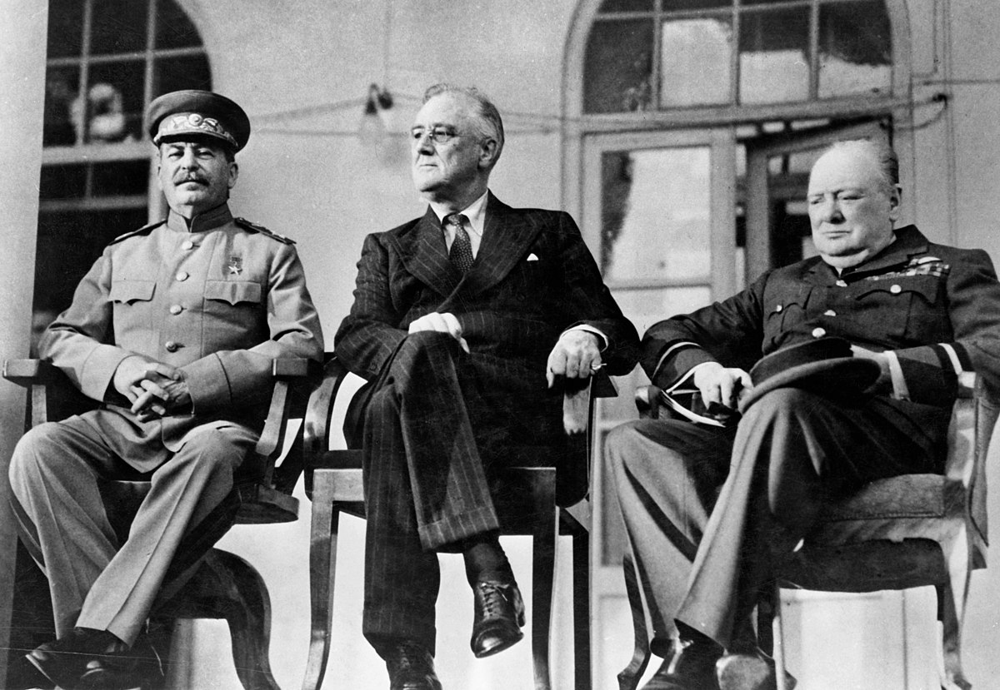
Operación Fortitude
Operación Fortitude se dividió en dos partes, norte y sur. Fortitude North se basaba en Escocia y empleaba diversas tácticas para dar a entender la acumulación de tropas listas para una invasión de Noruega. Seguros de que las fuerzas alemanas no podrían acercarse lo suficiente para el reconocimiento sin alertar primero a los Aliados y ser interceptados por la Royal Air Force, el ejército británico no tuvo que centrarse demasiado en la ilusión física. Utilizando transmisiones de radio dirigidas a las tropas inexistentes, junto con desinformación propagada por agentes dobles, las fuerzas aliadas pudieron crear un frente convincente cuando, en realidad, las tropas estaban mucho más al sur.
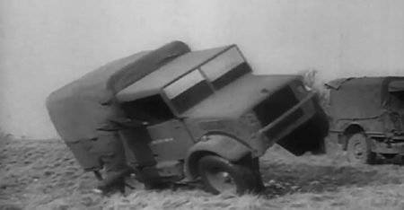
A principios de la primavera de 1944, comandos británicos llevaron a cabo una serie de ataques selectivos en Noruega. Destruyendo infraestructuras industriales y de envío junto con puestos militares, los ataques estaban diseñados para sugerir preparativos para una invasión que nunca iba a tener lugar.
Mientras tanto, más al sur, Fortitude South empleaba tácticas similares para insinuar una invasión de Pas de Calais por parte de la ficticia Primera Unidad del Ejército de los Estados Unidos (FUSAG). Con Calais siendo el punto de cruce más corto para los Aliados en el Canal de la Mancha y la ruta más rápida a Alemania, una invasión de Calais era muy probable. Al fomentar la creencia de un ataque en Calais, los Aliados podían convencer a las fuerzas alemanas de que el desembarco en Normandía era el engaño y que el verdadero objetivo era un ataque a Calais. De esta manera, habría confusión y desorden entre las fuerzas alemanas sobre dónde estaba la amenaza cuando los Aliados desembarcaran en Normandía.
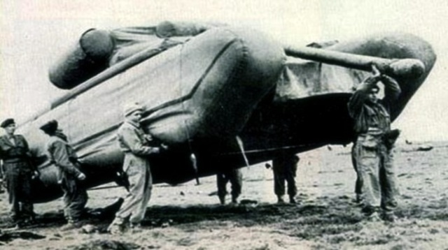
Operación Bertram
agosto-octubre de 1942
Al igual que Mincemeat y Fortitude, la Operación Bertram se trataba de desviar la atención del Eje lejos de puntos vulnerables para que los Aliados tuvieran una mayor oportunidad de un ataque exitoso en El Alamein, Egipto. Liderada por Dudley Clarke, la operación estaba diseñada para desviar a Erwin Rommel y las fuerzas alemanas haciéndoles creer que las fuerzas aliadas en África planeaban lanzar un ataque mucho más al sur y dos días después de lo programado.
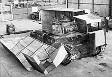
Con el acceso efectivo a Egipto para interrumpir las líneas de suministro limitado, se esperaba que cualquier intento de ataque tuviera lugar a lo largo de la costa egipcia. Con la carretera principal de suministro y el ferrocarril egipcio en juego, era una posición altamente vulnerable para las potencias del Eje perder. Si los Aliados querían su oportunidad, necesitaban crear un engaño realista que les permitiera desviar las fuerzas enemigas, pero también un elemento de sorpresa.
Junto con la Operación Canwell, una serie de engaños electromagnéticos sobre el tráfico de radio, la Operación Bertram fue una operación intrincada que utilizaba camuflaje, maniquíes, señuelos y protector solar para ocultar y desviar los movimientos de los tanques británicos. Los camiones se estacionaron abiertamente en un área de ensamblaje de tanques durante semanas antes del ataque, mientras que los tanques se estacionaron más atrás, lejos del frente. Cañones, bidones de gasolina y alimentos fueron disfrazados como camiones para que cualquier reconocimiento aéreo no detectara movimientos sospechosos ni indicios de movilización. Dos noches antes del ataque, todos los camiones fueron reemplazados por tanques equipados con protectores solares que los camuflarían como camiones para el reconocimiento aéreo, mientras que los tanques falsos se colocaron donde los tanques reales habían estado esperando anteriormente.
Cuidadosamente diseñadas para parecer convincentes al principio, los señuelos se dejaron degradar a lo largo del tiempo hasta la batalla para que el reconocimiento del Eje creyera que era un señuelo y no representara ninguna amenaza. En la noche antes de la batalla, los cañones ficticios fueron reemplazados por artillería real.
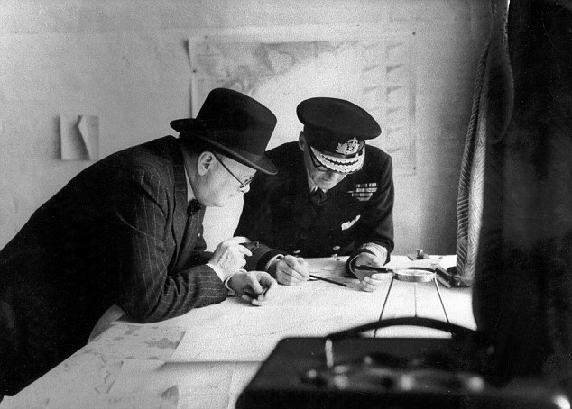
La Operación Bertram fue tan exitosa que, cuando fueron capturados, el general del Panzerarmee admitió que creían que los Aliados tenían al menos una división blindada más de la que tenían y que el ataque tendría lugar mucho más al sur, y al menos dos días después.
Ver más operaciones